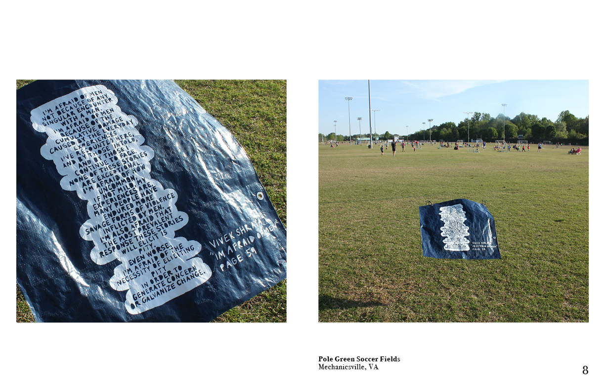
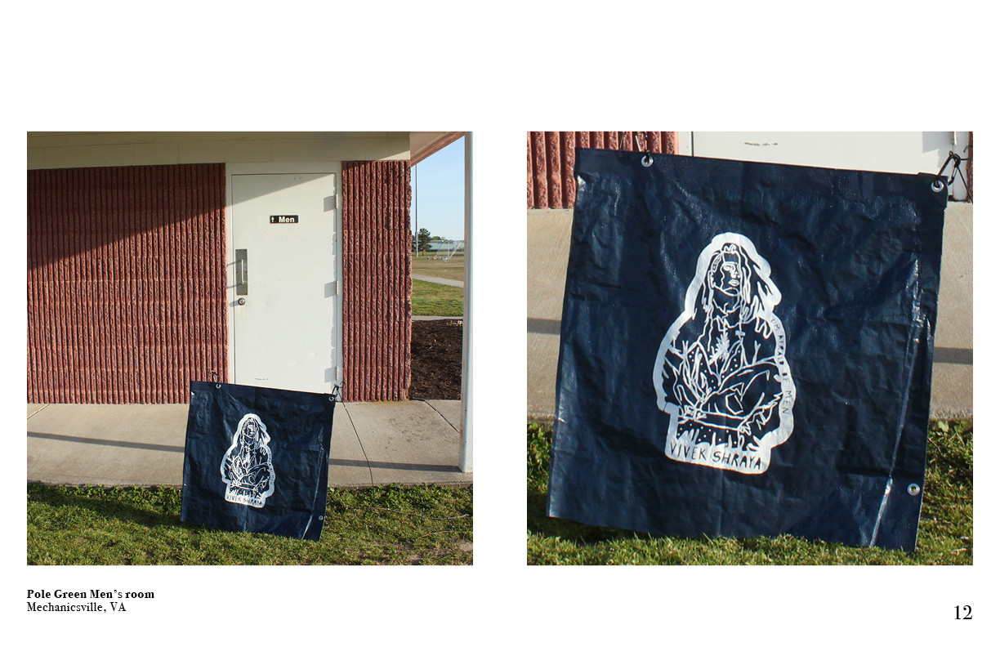
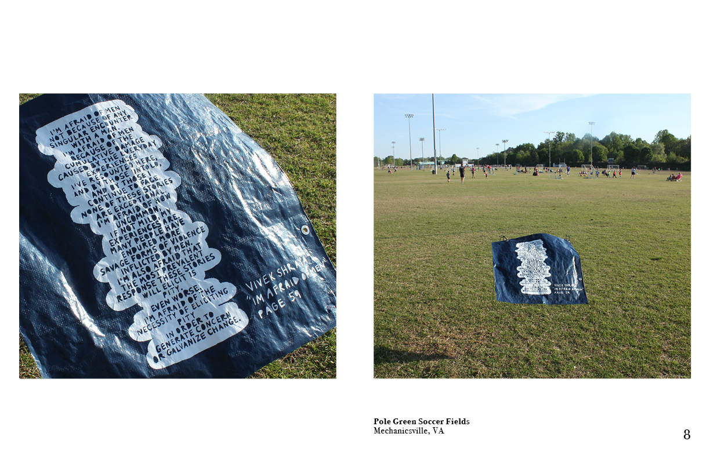
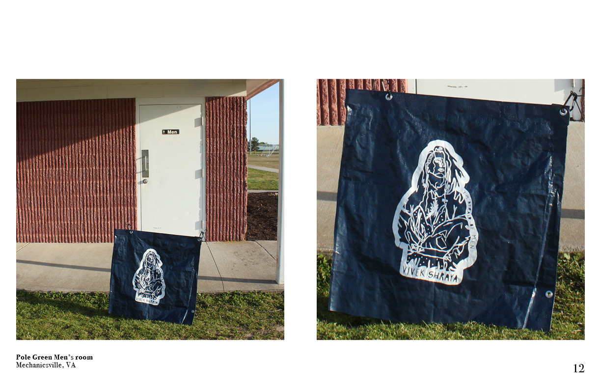
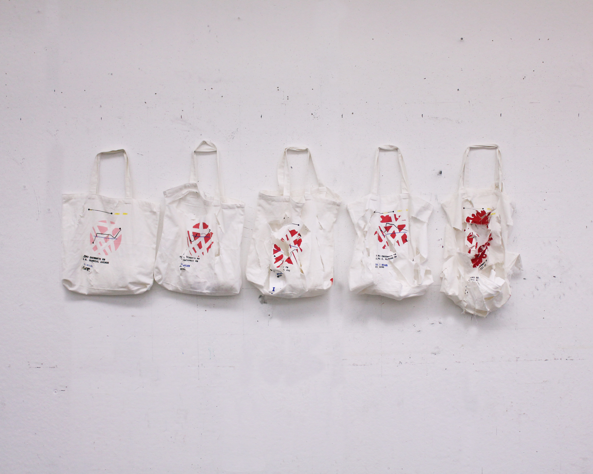

Text in Circulation

 





The recirculation of Vivek Shraya's book, "I'm Afraid of Men", in public settings
Spring 2021
tarp, vinyl
Napoleon's Retreat from Moscow

An installation emulating the endless loop I experienced travelling my whole life between divorced parents homes. This journey is illustrated on a plain tote, similar to the one I would pack for my trips. The destruction of the bags and the maps illustrated on them represent the fatigue I experience after 18 years of travelling. Accompanying each tote is a shirt, each have three different colored phrases screenprinted on them. Each shirt is the same cotton t shirt, to mimic the monotony of packing your life in a bag. Each print is a statement about my age, my understanding of the world, and my stance on home.
Fall 2019
cotton shirts, cotton totes, speedball ink
Aid to the Body

Fall 2018
wood, felt